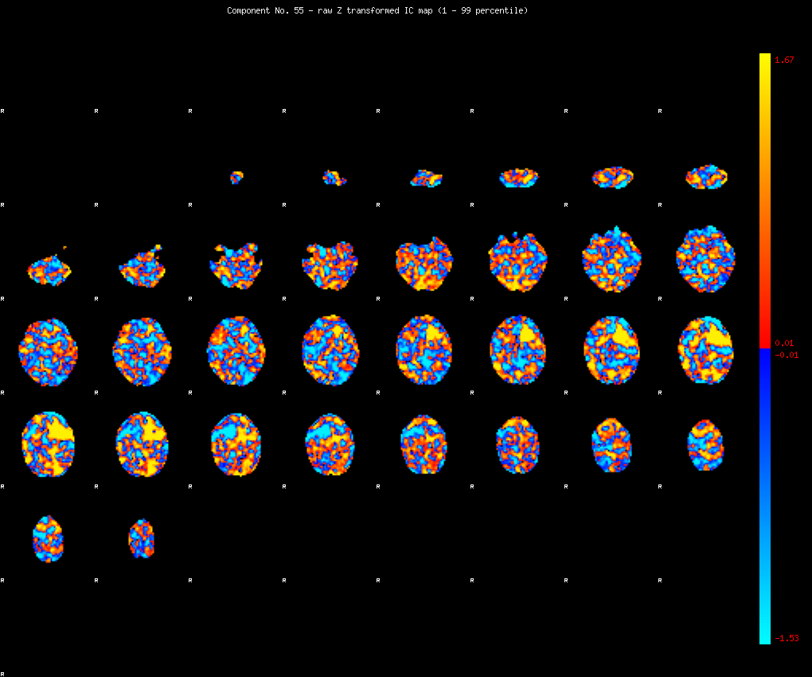
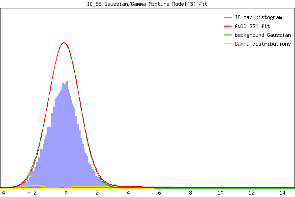

IC_55 Mixture Model fit
Means : -0.000000 3.787796 -2.053972
Vars : 1.000000 6.870543 0.306877
Prop. : 0.964351 0.026216 0.009434
This page produced automatically by MELODIC Version 3.13 - a part of FSL - FMRIB Software Library.